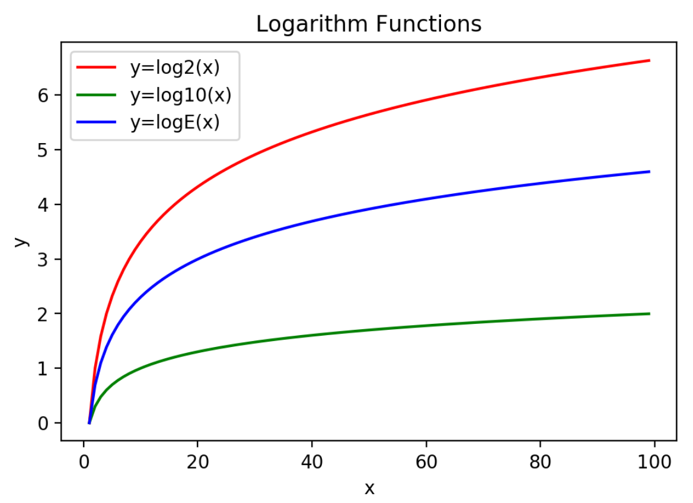

Keyboard shortcuts:
N/СпейсNext Slide
PPrevious Slide
OSlides Overview
ctrl+left clickZoom Element
If you want print version => add '
?print-pdf' at the end of slides URL (remove '#' fragment) and then print.
Like: https://wwwcourses.github.io/...CourseIntro.html?print-pdf
Feature Engineering
Created for

Iva E. Popova, 2022,

Feature Engineering Overview
Coming up with features is difficult, time-consuming, requires expert knowledge.
"Applied machine learning" is basically feature engineering.
- Andrew Ng, "Machine Learning and AI via Brain simulations"
What?
- Feature engineering is the process of using domain knowledge of the data to create features that make machine learning algorithms work.
- Feature engineering turns the given input into data useful for an ML algorithm.
- Feature Engineering is an art!

Why?
- The proper features used for a task play vital role in the ML result.
- Not always the input attributes are useful features for the task given.
- some attributes are not relevant to the task at all
- some attributes data are not in the proper form
- some separate attributes are correlated. Will it be useful to combine (cross) them into one feature?
Why?
- Good features:
- makes simple model to perform better than a complex model.
- increase predictive power of simple models.
- reduce model selection time.
- reduce training time by simplifying the model.
Examples
| Input Attribute | Feature |
|---|---|
| Employee BirthDate | Employee Age |
| Purchase Date | Purchase On Weekend |
| Longitude | Coordinates |
| Latitude | |
Feature Engineering process
- Features Selection: selecting the most useful features.
- Features Extraction: combining existing features to provide more useful features.
- Creation of new features: creation of new features, based on data.
Feature extraction
Feature extraction
Overview
- Feature extraction is the process of selecting new features from the input attributes.
- Usually, this process is a reduction of input attributes into relevant for the task features.
Feature transformation
Feature transformation
Overview
new_feature_set = f(old_feature_set)- Transform the original feature by some function in order to produce more meaningful feature set.
- sklearn.preprocessing module
- Log Transformation
- Feature Scaling or Normalization
- $l^2$ Normalization
Logarithm Function
$\log_{b} (x) = y$, if $b^y = x$
{kind=link}
Min-Max Scaling
$x̃ = x – min(x) / max(x) – min(x)$
- $x$ is an individual feature value at a given data point
- min(x) and max(x), respectively, are the minimum and maximum values of this feature over the entire dataset
- Min-max scaling squeezes (or stretches) all feature values to be within the range of [0, 1].

Examples
- The Jupyter Notebook is here: Features_transformations.ipynb
Resources
Feature Engineering for Text Classification
Feature Engineering for Text Classification
Overview
- Typical Features include words and phrases.
- Metadata such as subjects, dates, and file types can also be useful depending of the task
- The simplest approach is the Bag of Words
- More complex Feature Engineering techniques include the use of Ontologies and Latent Semantic Indexing
The Bag Of Words
- Stop-words removal
- Stemming
- TF/IDF normalization
- You can check the example Notebook at TF_IDF.ipynb